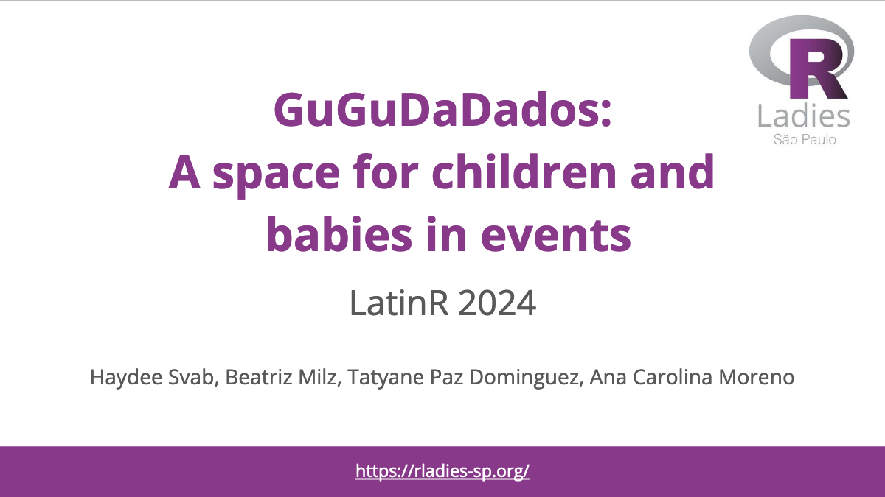

Beatriz Milz
About
English
Português
Español
Posts
All posts
English
Português
Español
Talks and teaching
Videos
Projects
Other
Research (PT-BR)
Quarto Gallery
Talks
Categorias
Tudo
(18)
Bookclub
(1)
Communities
(3)
community
(1)
Community
(3)
Diversity
(3)
EN
(2)
English
(16)
Functional Programming
(1)
GitHub
(3)
GitHub Actions
(2)
gradethis
(1)
knitr
(1)
LatinR
(1)
learnr
(1)
lesson
(3)
Methods
(3)
Metodology
(2)
Purrr
(1)
R
(2)
R-Ladies
(5)
Reproducibility
(1)
Reproducible Research
(1)
Research
(1)
RMarkdown
(1)
Talks
(3)
teaching
(1)
Teaching
(2)
UFABC
(3)
Workshop
(1)
Ordenar por
Pré-selecionado
Título
Data - Mais velho
Data - O mais novo
Translating R for Data Science into Portuguese: A Community-Led Initiative
Session: It Takes a Village: Building and Sustaining Communities
18 de set. de 2025
Structuring an Online Book Club: R for Data Science (2ed) by R-Ladies São Paulo
22 de nov. de 2024

GuguDaDados: A space for children and babies in events
22 de nov. de 2024
Introduction to R
12 de nov. de 2024
Qualitative Data Analysis: Coding
22 de out. de 2024
Literature review
15 de out. de 2024
Using GitHub as a Researcher
9 de out. de 2024
Actions to increase diversity in the R-Ladies community - São Paulo
2 de mai. de 2024
Purrr-fecting your R workflow - An introduction to functional programming
24 de nov. de 2023
Running code while we’re sleeping - Introduction to GitHub Actions for R users
29 de out. de 2022
Making awesome automations with GitHub Actions
rstudio::conf(2022)
28 de jul. de 2022
Interview for the Reproducible Research Scout Youtube Channel
20 de jun. de 2022
Scaling feedback using learnr and gradethis in a introductory R course
LatinR 2021
10 de nov. de 2021
My experience at useR 2019
Meetup R-Ladies and useR 2021
28 de abr. de 2021
Adding figures in R Markdown
Teaching exam - RStudio
23 de set. de 2020
Communities of practice in Latin America
R and Friends
8 de jul. de 2020
The evolution and importance of the R-Ladies São Paulo chapter in Brazil
useR 2019
11 de jul. de 2019
Producing Reports with knitr and R
5 de dez. de 2018
Nenhum item correspondente